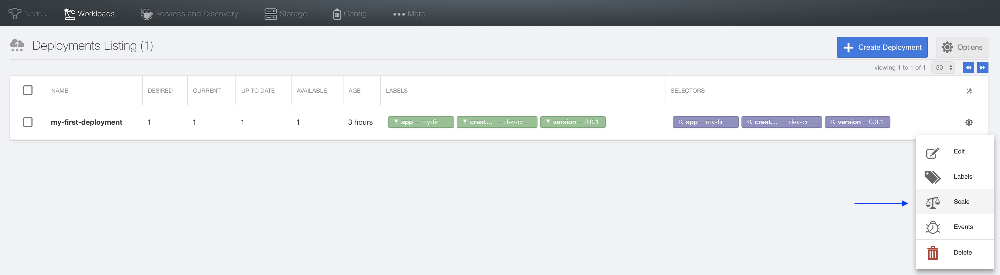
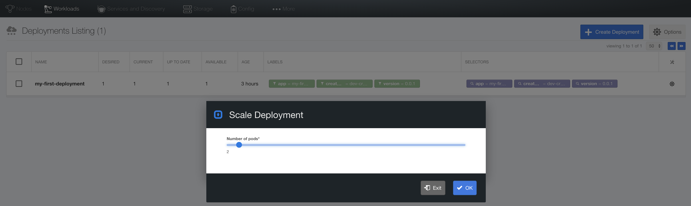
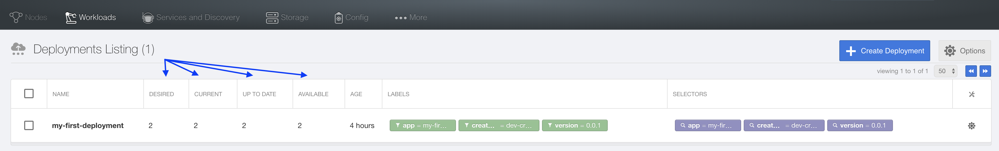
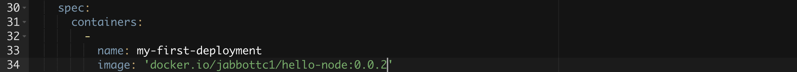
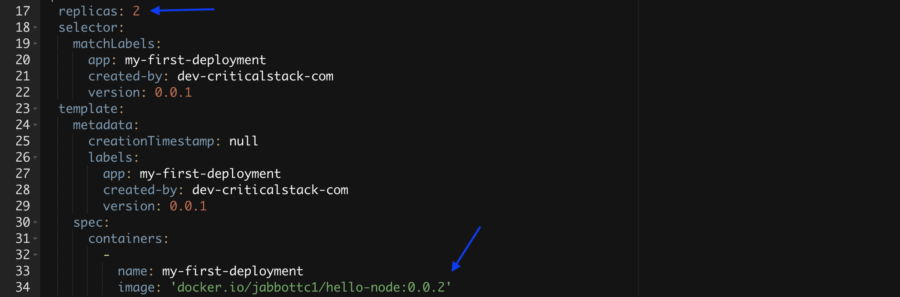
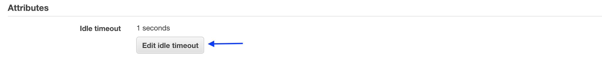

Before starting on this lab, you will need to have completed the Previous Node lab.
In the previous lab we created a simple NodeJS application, packaged the application in a docker image, pushed the docker image to a public docker image repository (Docker Hub), pulled that image into a Critical Stack deployment as a container instance, and accessed the application via a public URL.
In this next lab, we will create more instances of the container, update the application to show bread crumbs of those instances, push that update to Docker Hub, and use the Critical Stack UI to instruct Kubernetes to roll out the update while we refresh the public URL. This will let us observe that a seamless rolling update is done with zero downtime.
Edit app/index.js (in your node-lab directory) and replace the source code with the following:
// Load the http module to create an http server.
var http = require('http');
// Load the os module to access network interfaces.
var os = require('os');
// Load the crypto module to generate a random number.
var crypto = require("crypto");
// Get all interfaces by IP address
var interfaces = os.networkInterfaces();
var addresses = [];
for (var k in interfaces) {
for (var k2 in interfaces[k]) {
var address = interfaces[k][k2];
if (address.family === 'IPv4' && !address.internal) {
addresses.push(address.address);
}
}
}
// Generate a random number
var random_number = crypto.randomBytes(16).toString("hex");
// Configure our HTTP server to respond with Hello World to all requests.
var server = http.createServer(function (request, response) {
response.writeHead(200, {"Content-Type": "text/plain"});
response.end("Hello World from " + addresses + " (" + random_number + ")\n");
});
// Listen on port 3000
server.listen(3000, "0.0.0.0");
// Put a friendly message on the terminal
console.log("Server IPs: " + addresses);
console.log("Random number: " + random_number);
console.log("Server running at http://0.0.0.0:3000/");
Increment the application version number in your package.json file and re-run npm install to update the package-lock.json file.
user@testhost node-lab$ cat package.json
{
"name": "hello-node",
"version": "0.0.2",
"description": "Say hello from Node",
"main": "app/index.js",
"scripts": {
"test": "echo \"Error: no test specified\" && exit 1"
},
"author": "",
"license": "ISC"
}
user@testhost node-lab$ npm install
npm WARN hello-node@0.0.2 No repository field.
up to date in 0.632s
found 0 vulnerabilities
<your-username>/hello-node:0.0.2 so we can uniquely identify the new image. After it’s built, push it to Docker Hub so it can be updated in your Critical Stack cluster.user@testhost node-lab$ docker build -t <your-username>/hello-node:0.0.2 -f Dockerfile .
Sending build context to Docker daemon 4.288MB
Step 1/9 : FROM node:9
---> 08a8c8089ab1
Step 2/9 : RUN mkdir /src
---> Using cache
---> 3530d1bbe38a
Step 3/9 : WORKDIR /src
---> Using cache
---> 4096063f6a2b
Step 4/9 : COPY ./package.json /src/package.json
---> ad23e7eb360e
Step 5/9 : COPY ./package-lock.json /src/package-lock.json
---> 46c675f287b6
Step 6/9 : RUN npm install --silent
---> Running in d3144afb3a54
up to date in 0.076s
Removing intermediate container d3144afb3a54
---> 56cbd547eb6d
Step 7/9 : COPY ./app /src/app
---> 50b39bb7ea64
Step 8/9 : EXPOSE 3000
---> Running in 0ab1df6c4e2c
Removing intermediate container 0ab1df6c4e2c
---> 67b69d1d4337
Step 9/9 : CMD ["node", "app/index.js"]
---> Running in 7925bde282fc
Removing intermediate container 7925bde282fc
---> be1e663ce0d2
Successfully built be1e663ce0d2
Successfully tagged <your-username>/hello-node:0.0.2
user@testhost node-lab$ docker push <your-username>/hello-node:0.0.2
The push refers to repository [docker.io/<your-username>/hello-node]
13108b60c999: Pushed
328a2707105e: Pushed
700b0faff5ac: Pushed
eb80df9a56cf: Pushed
df64ff0ed93f: Layer already exists
71521673e105: Layer already exists
7695686f75c0: Layer already exists
e492023cc4f9: Layer already exists
cbda574aa37a: Layer already exists
8451f9fe0016: Layer already exists
858cd8541f7e: Layer already exists
a42d312a03bb: Layer already exists
dd1eb1fd7e08: Layer already exists
0.0.2: digest: sha256:2e1002b635cd983e7f2458331079f7b131d8096fd5994287c6f4933438513367 size: 3041
Go to the Critical Stack UI under Deployment Listings, find the row my-first-deployment, click on the gear icon, and select Scale. Move the slider for Number of podS to 2 and then click OK.
 
The previous step declaratively set the desired state of our deployment’s pods. Watch the deployment scale from 1 to 2:

Click on the gear icon again, and select Edit. On line 36, change the Docker image tag from 0.0.1 to 0.0.2. For example: image: ‘docker.io/jabbottc1/hello-node:0.0.1’ becomes image: ‘docker.io/jabbottc1/hello-node:0.0.2’. Next click Save and then Exit.

Note that while we are editing the deployment, another way to scale the application is to directly update the yaml as shown below.

Refresh your browser pointing to the public URL for your application and watch the update roll out. Also notice the different output when traffic shifts from one pod to another. Note: changing Idle timeout to 1 in the load balancer configuration will reduce the amount of time between switching from one pod to another (in the same section used to get the public facing URL in the previous lab).

If you want to go back to the previous application version for any reason, simply edit the deployment again and change the Docker image tag from 0.0.2 back to 0.0.1.
You should now feel comfortable with the basics of pushing new docker images to a repository and pulling them into a Critical Stack deployment running multiple instances of your image. This process is the basis for ongoing updates.